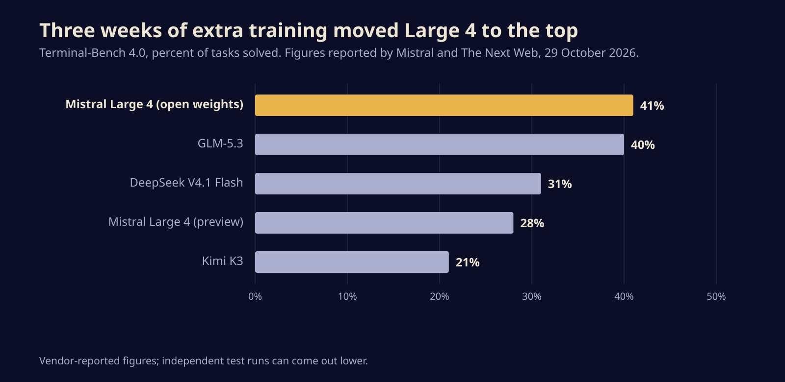
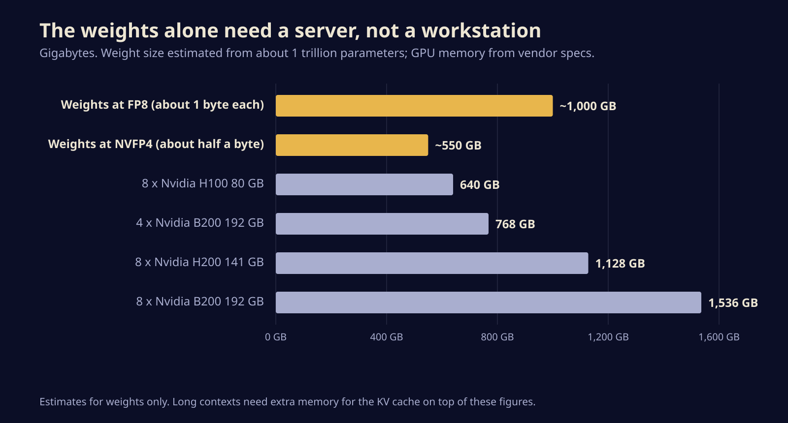

Mistral just gave away a trillion-parameter model. Here is what it takes to run it
Mistral Large 4 is now a free download, pitched as the best open model for coding and cyber defence. We look at what the benchmarks show, what the licence allows and how much hardware you need before you try it.
On Thursday, Mistral put the full weights of Mistral Large 4 on Hugging Face, so anyone can now download a model with roughly a trillion parameters and run it on their own machines. The Paris lab says it is the strongest open model for agentic coding, and it is pitching the release squarely at companies and governments that want serious AI for security work without renting it from an American lab.
The model has been in public preview since earlier this month under its informal name, Le Chonk. What changed this week is ownership: the preview lived behind Mistral's API, while the weights are now a file you keep.
What actually shipped
The Hugging Face repository is called Mistral-Large-4-1T-A52B, and the name tells you most of the story. It is a mixture-of-experts model: the network holds about a trillion parameters in total, but a router sends each token through only a few specialist blocks. The model card lists 128 routed experts with four active per token, plus one shared expert, which works out to about 49 billion active parameters (52 billion counting the embedding and output layers). That is why a model this large can answer at a sensible speed.
It reads text and images and writes text. The context window is one million tokens, and there are three reasoning settings: low, medium and high, with high as the default. The model card lists FP8 weights, with a separate NVFP4 checkpoint tuned for Nvidia's Blackwell chips. Serving is supported in vLLM and SGLang out of the box, plus an Nvidia NIM container.
If you would rather not host it, Mistral's announcement lists API pricing of $0.70 per million input tokens and $2.10 per million output tokens, and the model is also on OpenRouter and Microsoft Foundry. You can poke at it for free in Mistral's chat app through its Vibe Code feature.
The benchmark claims, and how much to trust them
The headline claim rests on the Coding Agent Index from Artificial Analysis, an independent benchmarking firm. Mistral says Large 4 scores 48 percent there, effectively tied with GLM-5.3 from China's Zhipu, while using 47 percent fewer tokens per task. Fewer tokens matters more than it sounds: on a long agent run, it is the difference between a bill and a big bill.
The extra three weeks of reinforcement learning since the preview made a visible dent. On Terminal-Bench 4.0, a test of whether a model can finish real jobs in a command line, Mistral reports a jump from 28 to 41 percent.

Read those numbers with care. Nearly every score in the launch comes from Mistral itself, and independent runs of the final weights are only starting to appear. Artificial Analysis does list the final model, with a score of 26 on its broad Intelligence Index, a figure that sits well below the closed frontier models. On the hardest general tests, the best open models still trail the best closed ones by a clear margin. Large 4's case is narrower: a top-tier open model for code and agents that is cheap to run per task.
The security pitch has a caveat built in
Mistral is selling this as a defensive cyber tool. It reports 51 percent on the Artificial Analysis Cyber Index, which tests finding, reproducing and patching vulnerabilities, and a 96.6 percent refusal rate on malicious cyber requests. A specialised security variant is in preview with design partners including Orange Cyberdefense. Pierre Stock, Mistral's VP of science, told TechCrunch the selling point is access nobody can switch off, because the weights are already out.
That cuts both ways, and Mistral says so itself. Its announcement admits that a security vendor testing the model saw it refuse attacks on live targets but still found "a potential for uplift to conduct real attacks," and that Mistral is now tightening its guardrails. Once weights are public, though, any guardrail update only reaches people who choose to download it. Anyone can fine-tune the refusals away on their own hardware.
A guardrail on an open model is a default setting, not a lock.
Before you try to run it
The practical question for most readers is hardware. A trillion parameters at FP8 is roughly a terabyte of weights before you add any memory for the conversation itself. The model card's examples all assume eight GPUs, and The Next Web reports that the quantised build fits on four Nvidia B200 or B300 cards.

So for a home lab or a single workstation, the honest answer is no. According to The Next Web, smaller distilled versions, including one for laptops, are expected in the coming months, with no dates promised. Until then, here is how to approach it:
- Try it hosted first. Use the API, OpenRouter or the chat app on your own coding tasks before spending on GPUs. Your repo is a better benchmark than anyone's leaderboard.
- Start on the FP8 build with eight cards if you do self-host, and keep the reasoning setting in mind: high is the default and burns the most tokens.
- Read the licence. It is the Mistral Ecosystem Open-Weight License, a modified MIT licence. You can use, modify, fine-tune and sell products built on it, but running it as a paid model-as-a-service business needs a separate commercial deal with Mistral.
- Treat security use as experimental. If you point it at your own systems for pen testing, keep a human approving every action.
Why this one matters
For two years the best open-weight models have mostly come from Chinese labs, which left European and American companies that wanted to self-host choosing between capability and comfort with the supplier. Large 4 is the first Western open model that credibly sits at that top table for coding, built and trained in Europe. Whether it stays there depends on the independent numbers that land over the next few weeks, and on whether the laptop-sized version Mistral has promised turns up.
Sources
- Mistral AI: Mistral Large 4 (Le Chonk) is now open weight
- Hugging Face: mistralai/Mistral-Large-4-1T-A52B model card
- TechCrunch: Mistral releases weights for its trillion-parameter AI model, targeting cybersecurity
- The Next Web: Mistral releases open weights for its 1 trillion-parameter Large 4 model
- Artificial Analysis: Mistral Large 4 model page
Written with AI for Bade's Mod Shop. Facts are checked against the sources above on the day of publishing; if one is wrong, open an issue.